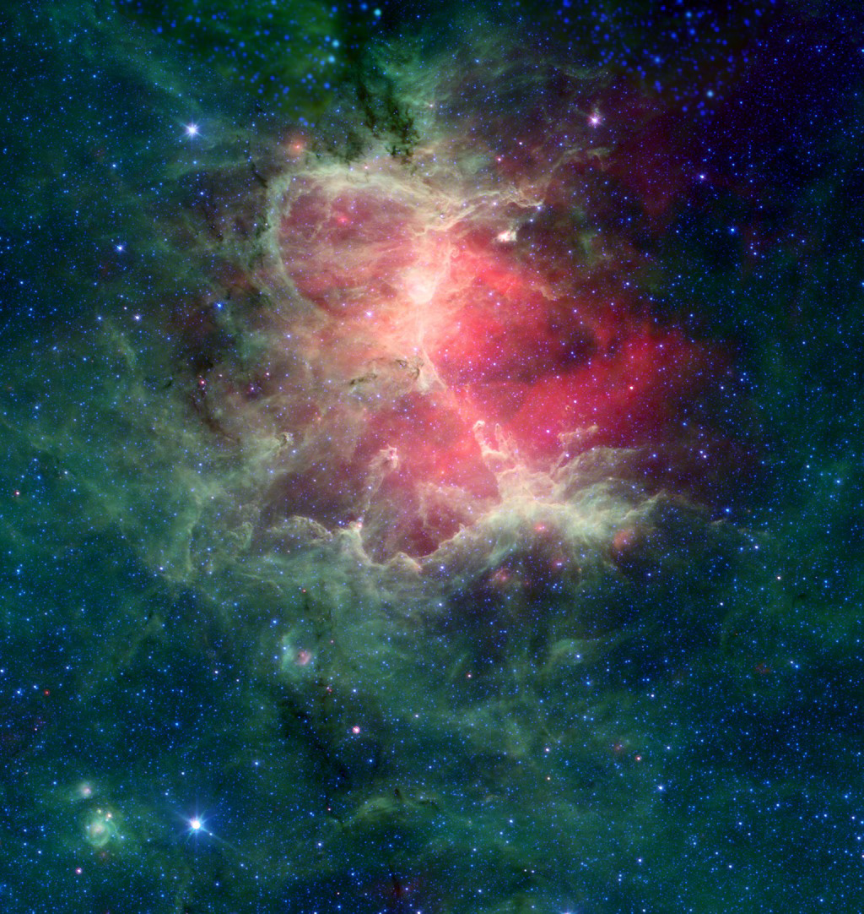

Eagle Nebula

fonte telescopio spaziale Spitzer

fonte telescopio spaziale Spitzer
Located 5,700 light-years away in the Serpens constellation, the Eagle Nebula is one of the most iconic "stellar nurseries" in our galaxy. It is a vast cloud of interstellar gas and dust where new stars are constantly being born. While it looks like a static painting, it is actually a violent and dynamic place: massive young stars emit intense radiation that carves and shapes the surrounding gas into the towering structures known as the "Pillars of Creation." Through Spitzer’s infrared eye, we can look past the dark dust and witness the fiery process of star formation hidden inside.
Humans cannot see infrared light, but we can feel it as heat. To study the Eagle Nebula, the Spitzer Space Telescope captures different "flavors" of infrared radiation, which we have mapped to visible colors and unique sounds:
Blue (4.5 µm): This frequency highlights the "old guard"—mature stars that have already cleared their surroundings of gas and dust.
Green (8.0 µm): This band reveals Organic Molecules (PAHs). It shows the skeletal structure of the nebula, where thick dust clouds are being sculpted by stellar winds.
Red (24.0 µm): The most energetic band. It detects "Protostars"—infant suns so young and hot they glow fiercely through their dusty cocoons.
Interact with the buttons to isolate these layers and hear the hidden symphony of the cosmos.